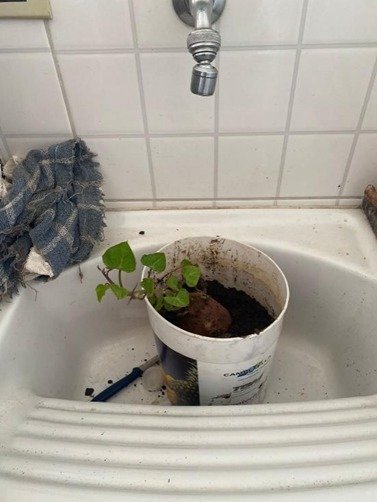
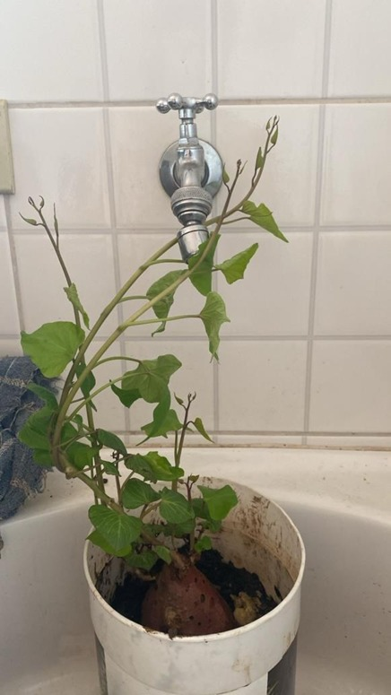

Introdução
Abatata é uma planta muito fácil de cuidar, o que a torna popular entre quem quer começar a plantar em casa. Com alguns cuidados básicos, ela cresce bem e dá uma boa colheita.
Clima
A batata gosta de temperaturas mais amenas, entre 15°C e 20°C. Se o clima for muito quente ou frio, ela pode não se desenvolver tão bem, então é melhor plantar em épocas de clima mais fresco.
Solo
Ela se dá melhor em solos fofos, bem drenados e ricos em nutrientes. Adicionar adubo orgânico ajuda a dar o que ela precisa para crescer forte. O solo também deve ter um pH levemente ácido, entre 5,5 e 6,5.
Sol
A batata adora luz, mas não precisa de sol o dia inteiro. Cerca de seis horas diárias de exposição são suficientes para ela crescer saudável.
Água
A rega deve ser regular, mantendo o solo úmido sem encharcar. Excesso de água pode prejudicar os tubérculos, então é bom cuidar para que o solo não fique encharcado.
Com essas condições simples, a batata cresce bem e se desenvolve sem grandes dificuldades, sendo uma ótima escolha para quem quer ter uma plantação em casa.
Primeiros Passos
Plantar batatas em um balde é uma maneira fácil e prática de cultivar em casa, e você pode acompanhar o crescimento delas semana a semana. No caso desta experiência, a batata foi plantada no dia 14 de setembro de 2024 e foi registrado o crescimento semanalmente, tornando o processo ainda mais interessante e envolvente.
Materiais usados
- Batata
- Balde de tamanho médio, com furos no fundo para drenagem
- Terra rica em nutrientes
- Mãos à obra! Todo o processo foi feito sem ferramentas complicadas, apenas com as mãos, utilizando no máximo uma faca de cozinha 
Preparação do Solo
Primeiro, é necessário escolher uma terra bem fofinha, rica em nutrientes, e que permita que as raízes cresçam livremente. O solo foi colocado no balde, preenchendo até cerca de um terço. Para melhorar a nutrição, pode-se misturar um pouco de adubo orgânico.
Preparando o Balde
O balde, ou vaso, deve ter furos no fundo para que o excesso de água possa drenar. Se o balde não tiver furos, você pode fazer alguns usando uma furadeira ou algo perfurante. Isso evita o acúmulo de água, que pode apodrecer as batatas.
Plantando as Batatas
Com o solo preparado, a batata foi colocada diretamente no balde, sem muita complicação. Elas foram cobertas com mais uma camada de terra, mas sem pressionar muito o solo, garantindo que ele permanecesse leve e arejado.
Acompanhamento do Crescimento
A cada semana, o crescimento da planta foi registrado. Logo nas primeiras semanas, as hastes começaram a aparecer, e à medida que as folhas cresciam, foi sendo adicionada mais terra no balde para cobrir parte das hastes. Esse processo ajuda a garantir que mais batatas se formem ao longo do crescimento da planta.
Sujando as Mãos
Cultivar batatas diretamente em um balde foi uma experiência prática e cheia de descobertas. Sem grandes equipamentos ou sementes especiais, o processo envolveu usar a própria batata, e foi uma jornada de aprendizado, com cuidados simples e mãos à obra, literalmente.
Processo de plantação
Ao invés de usar sementes, a batata comum foi a estrela da plantação. Pegou-se batatas e foram colocadas diretamente no solo dentro do balde. O solo, previamente preparado com nutrientes, preenchia cerca de um terço do balde. Depois de posicionar as batatas, cobrimos com mais uma camada de terra, deixando o processo simples e direto, sem muitas complicações.
Cuidados pré e pós germinação
No período antes da germinação, a atenção estava em manter o solo levemente úmido, mas nunca encharcado, para garantir que as batatas não apodrecessem. A cada semana, era possível notar pequenas mudanças, com as primeiras folhas começando a surgir. Após a germinação, conforme as hastes cresciam, o balde recebia mais terra para cobrir parte das hastes, o que ajuda a garantir que novas batatas se formem.
Melhoras Práticas
Algumas práticas foram melhorando com o tempo. Por exemplo, percebemos que deixar o balde em uma área com bastante luz natural fez grande diferença para o crescimento saudável. Outra melhoria foi ajustar a quantidade de rega – no começo, quase encharcamos o solo, mas depois aprendemos a manter o equilíbrio da umidade, garantindo que o solo ficasse sempre úmido, mas não encharcado.
Colheita e Armazenamento
Depois de semanas acompanhando o crescimento das batatas, chega a hora da colheita, mas é importante saber o momento certo para garantir que o resultado seja o melhor possível.
Como identificar o ponto de colheita
O sinal mais claro de que as batatas estão prontas para serem colhidas é quando as folhas e hastes da planta começam a murchar e secar. Esse é um indicativo de que a planta completou seu ciclo de crescimento. Quando a parte de cima fica amarelada e começa a morrer, é hora de preparar a colheita. Isso normalmente acontece cerca de 10 a 12 semanas após o plantio.
Sinais de Maturidade
As batatas maduras terão uma casca firme e resistente. Se você cavar o solo e retirar uma batata para testar, esfregue a casca levemente com os dedos. Se a casca não sair facilmente, isso significa que as batatas já estão maduras. Caso a casca ainda esteja fina e se solte com facilidade, é melhor esperar mais um pouco.
Como Colher Corretamente
Para evitar danos ou perda de batatas, o ideal é retirar o solo do balde com cuidado. Use as mãos para soltar a terra ao redor da planta, sem forçar demais, já que cavar bruscamente pode machucar ou cortar as batatas. Puxe a planta com cuidado e vá retirando as batatas uma a uma. Como o cultivo foi feito em umbalde, esse processo é mais simples, masa dica é sempre manusear comdelicadeza para não danificar os tubérculos.
Armazenamento
Após a colheita, deixe as batatas secarem por alguns dias em um local arejado e fora da luz direta do sol, o que ajuda a "curar" a casca e garantir uma maior durabilidade. Depois disso, elas podemser armazenadas em um local fresco, seco e escuro, como uma despensa ou caixa de papelão. Evite refrigerar, pois temperaturas muito baixas podem alterar o sabor e a textura das batatas.
Conclusão
A batata, como foi apresentado no documento acima, além de um alimento versátil, podendo ser utilizado para diferentes finalidades e receitas, e saboroso, é também muito fácil de ser plantado, visto que não possui muitos requisitos ou cuidados complexos para crescer de maneira saudável. Cultivar batatas em um balde, por exemplo, mostrou que, com poucos recursos e uma rotina simples de cuidados, é possível colher um alimento fresco e nutritivo. Se você tem interesse em experimentar o cultivo, essa é uma ótima forma de começar. Além de ser uma experiência gratificante, plantar algo com suas próprias mãos pode trazer uma nova perspectiva sobre o processo natural dos alimentos que consumimos diariamente. Não precisa de muito: um balde, um pouco de terra e paciência. Você pode se surpreender com o que é capaz de colher!